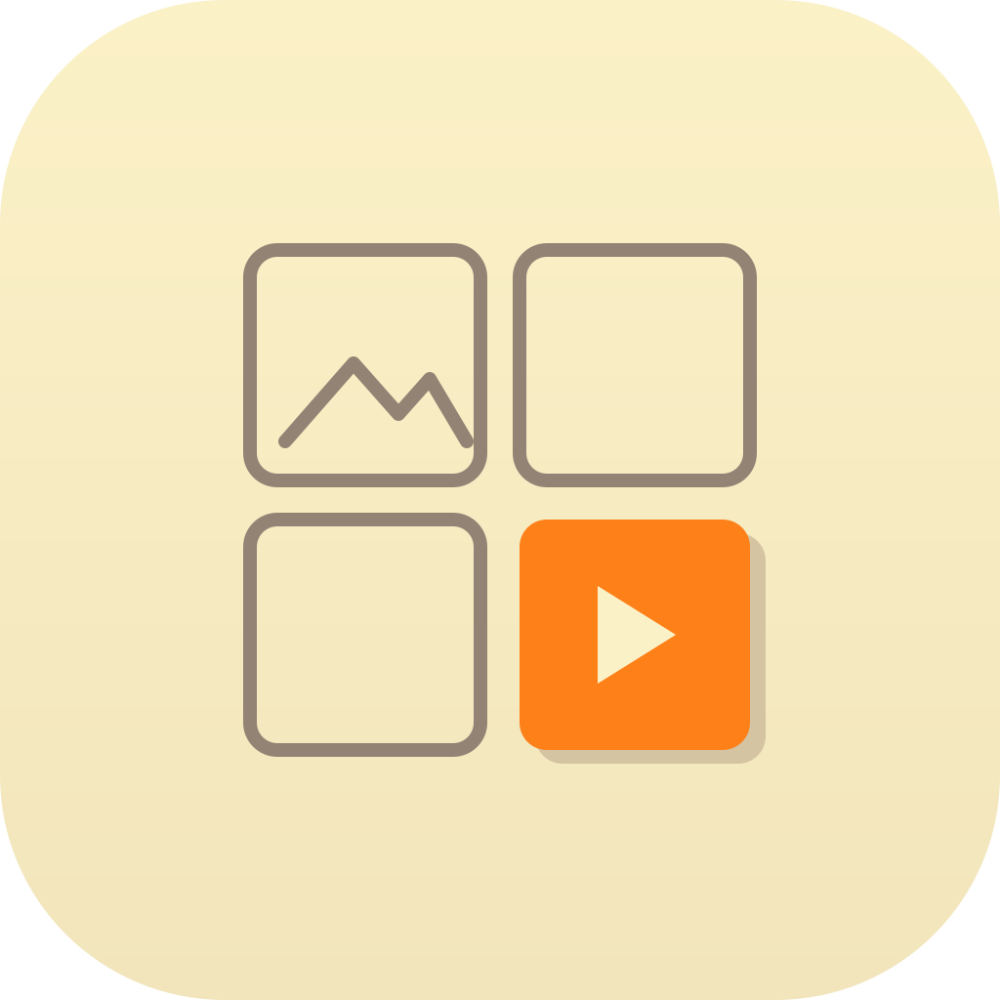
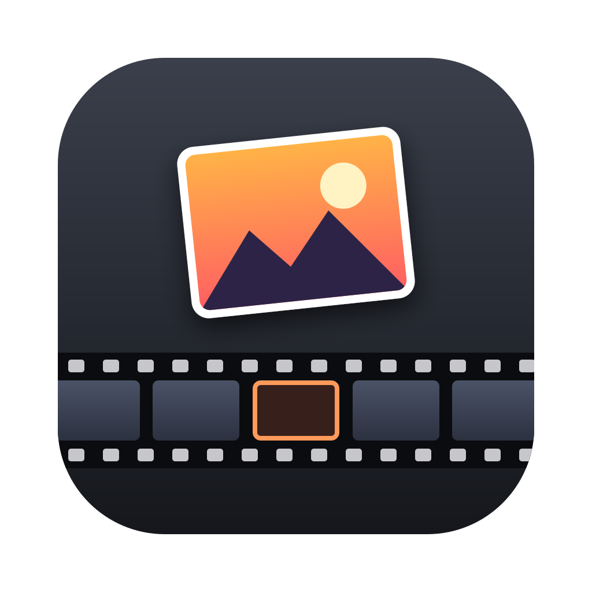
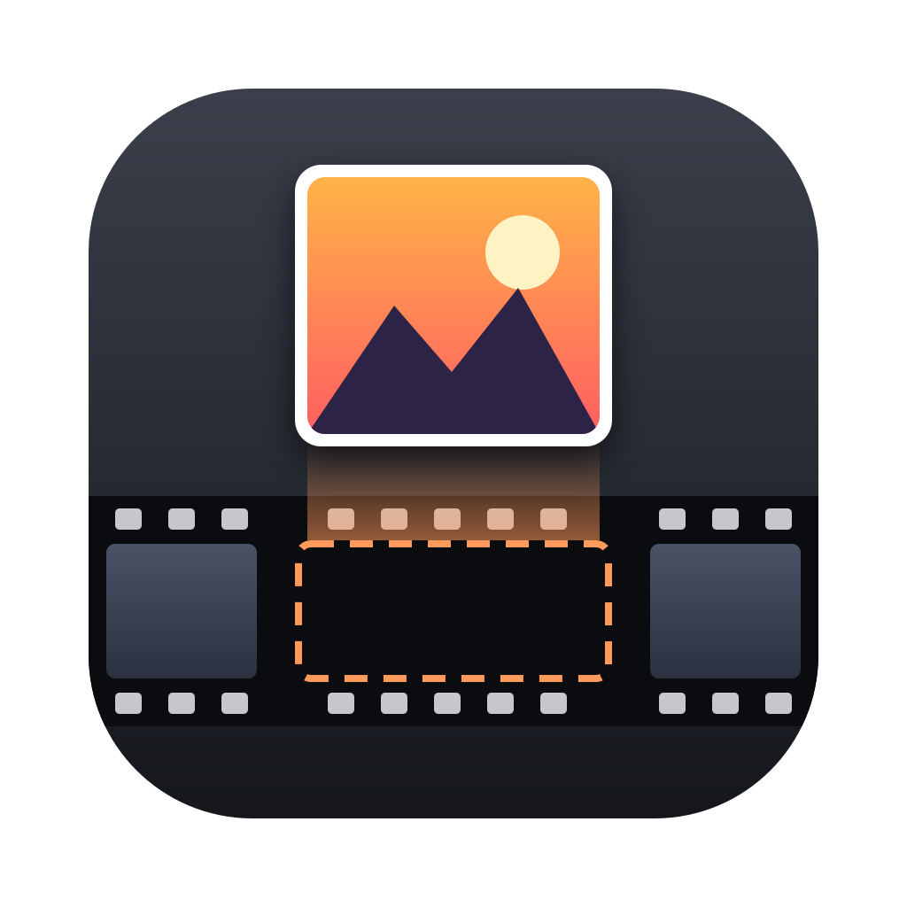
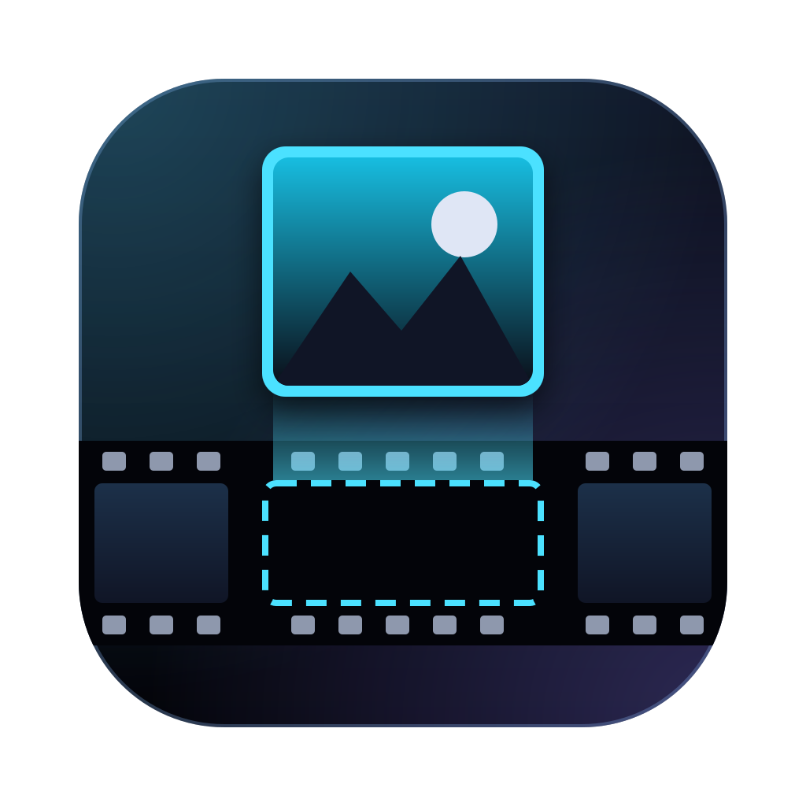

Achse: wie wörtlich erzählt das Icon die Funktion „Video → Thumbnail“?
„Video“, klassisch und sofort lesbar. Filmstreifen + Play. Utilitaristisch, dunkel.

Das Produkt selbst: ein Thumbnail-Grid, eine Zelle aktiv. Hell, Gruvbox Light — passt zu deinem Zed-Theme.
Der Vorgang: ein Frame wird aus der Timeline herausgehoben. Konzeptuell, warm, Gruvbox Dark.

Gekippter Frame über dem Filmstreifen, leere Zelle orange markiert.

Frame wird senkrecht aus einem gestrichelten Slot gezogen, mit Bewegungsspur.

Das derzeit eingebaute App-Icon zum Vergleich.
Datei öffnen: open ~/ic/videothumb/sketches/compare.html